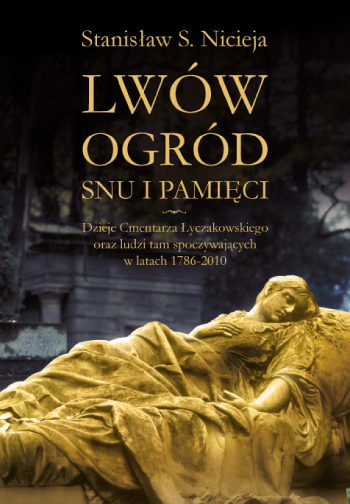

Lwów ogród snu i pamięci
Ogród snu i pamięci Dzieje cmentarza Łyczakowskiego we Lwowie i ludzi tam spoczywających w latach 1786-2010. Książka bogatsza od poprzednich wydań - zawiera 4820 nazwisk w tym 600 nowych. Nowością są też zdjęcia nie tylko nagrobków ale i zmarłych osób. Nie jest to książka o smutku i rozpaczy – z czym kojarzy się na ogół śmierć i cmentarz – ale przede wszystkim jest zapisem różnych przejawów urody życia i smaków epoki, przypomina bowiem biografie ludzi, którzy żyli w pięknym, bogatym, pogodnym mieście, a odchodząc z tego świata zostali pożegnani zadziwiającymi swą urodą nagrobkami, rzeźbami i wierszowanymi epitafiami.
Walorem tej książki jest to, co wyróżnia twórczość prof. Stanisława Nicieji - piękny literacki język, erudycja i potoczysta, sugestywna narracja.
Ze wstępu: "Czy Cmentarz Łyczakowski we Lwowie to rzeczywiście jeden z najpiękniejszych i najoryginalniejszych cmentarzy europejskich? Czy takie domniemanie to może tylko przejaw polskiej i ukraińskiej megalomanii? Te pytania zadawałem sobie od początku mojej niezwykłej, fascynującej przygody z tą nekropolią [...] Książka ta zamyka moje ponad 30-letnie badania dziejów Cmentarza Łyczakowskiego we Lwowie. Wracałem tam z różną częstotliwością wielokrotnie. W cieniu cmentarnych drzew spędziłem całe miesiące. Napisałem w tym czasie kilkadziesiąt artykułów naukowych, udzieliłem dziesiątków wywiadów, poświęciłem temu tematowi kilka obszernych książek: „Cmentarz Łyczakowski”, „Cmentarz Obrońców Lwowa”, „Łyczaków. Dzielnica za Styksem”, „Lwowskie Orlęta”, które rozeszły się w dużych nakładach, w sumie ponad 300 tysięcy egzemplarzy. Publikacje te miały setki recenzentów nie tylko z katedr uniwersyteckich oraz w ważnych polskich i ukraińskich czasopismach, ale poddane były ocenie i krytyce rodzin lwowskich rozsianych po całym świecie. Otrzymałem od nich tysiące listów z korektami, uwagami, uzupełnieniami, sugestiami, które miały wpływ na ostateczny kształt kolejnych łyczakowskich książek. Dzieje Łyczakowa to nigdy niekończąca się opowieść. Każda wyprawa na ten cmentarz to nowe odkrycia. Na tej słynnej nekropolii w ciągu jej ponad 225 lat istnienia pochowano około 400 tysięcy osób, z których szacunkowo ponad 10 tysięcy przekroczyło tzw. próg przeciętności, czyli czymś nadzwyczajnym się wyróżniło -zapisało swoje biografie w pamięci nie tylko swojej rodziny. [...] Mimo wielu miesięcy spędzonych na Łyczakowie i w archiwach Lwowa, nie dotarłem do wielu tajemnic, nie rozszyfrowałem wielu anonimowych mogił i nie przywołałem wszystkich, którzy na to zasługiwali. Historia jest często niewdzięczna i niesprawiedliwa, zazdrośnie skrywająca sekrety. Człowiek może dokonać rzeczy największych, najwspanialszych, ale jeśli tego ktoś w odpowiednim czasie nie zapisze, nie zarejestruje w jakimś dokumencie, z upływem lat czyny te zanurzą się w ludzkiej niepamięci, pogrążą się w czeluści zapomnienia. A zdarza się, że czyny będą przypisane innym ludziom. [...] Na kartach tej książki przywołuję setki nazwisk osób, których prochy spoczywają na Cmentarzu Łyczakowskim. Czynię to przy omawianiu pomników artystycznych, inskrypcji i epitafiów, przy opisach uroczystych pogrzebów, manifestacji patriotycznych, obrzędów cmentarnych. Ale pagórki Łyczakowa kryją również prochy wielu ludzi, którzy za życia przekroczyli próg przeciętności, a po śmierci spoczęli pod prostymi mogiłami bądź w grobowcach rodzinnych pozbawionych wartości artystycznych: polityków i wysokich urzędników, sędziów i prawników, uczonych i nauczycieli, architektów, lekarzy, działaczy społecznych i filantropów, twórców kultury – pisarzy, poetów, aktorów i różnego rodzaju artystów, wreszcie duchownych, kupców, przemysłowców i rzemieślników chlubnie zapisanych w dziejach Polski. Nie sposób w monografii Cmentarza Łyczakowskiego pominąć ich nazwisk."